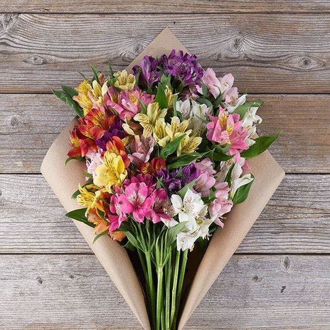

زهرة أو زنبق ألستروميريا (Alstroemeria): هي واحدة من أكثر الأزهار المحبوبة والجميلة التي يمكن إهدائها وأخذها، المعروفة أيضًا باسم زنبق بيرو أو زنابق الأميرة، لذا، عند البحث عن زهرة للتعبير عن المحبة لصديق أو شريك، يمكن اختيار زهرة ألستروميريا.
زهرة ألستروميريا عبارة عن نباتات صغيرة ذات أوراق شجر مورقة تنتج ثروة من الأزهار النابضة بالحياة من أواخر الربيع إلى أوائل الخريف، لا يقتصر الأمر على تزيين هذه الأزهار بظلال متناقضة وشعيرات محببة فحسب، بل تتمتع بعمر في الإناء يصل إلى أسبوعين، تزدهر هذه النباتات السعيدة في ظروف مشمسة جزئيًا وتعمل بشكل جيد في أسِرَّة الحدائق أو الحدود أو الحاويات.